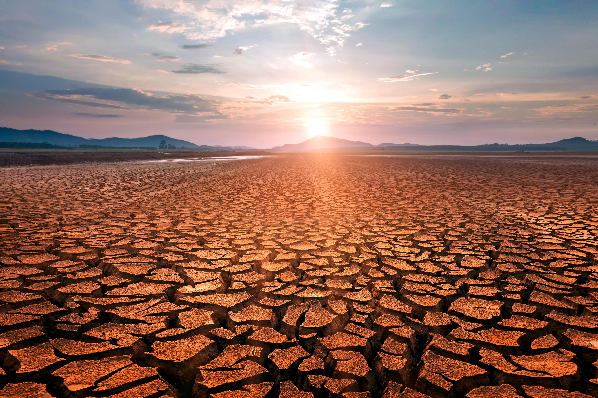

Buts
L'association MANAMPISOA propose le fait de transformer l'eau de mer en eau potable afin que les gens ne se déshydratent plus ainsi que les autres êtres vivants car l'eau potable est très indispensable à la vie de l'homme et essentielle dans les conditions de vie humaine pour: la nourriture, les les linges, les cuissons, la douche et la préparation des aliments,...